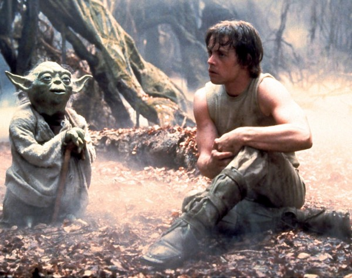

Как растить команду
без вреда ментальному здоровью
Как растить команду
без вреда ментальному здоровью
Познакомимся?
Кучук Андрей
Team Lead CMS team (Shopify department)
Ментор Rolling Scopes School
Участик и докладчик Rolling Scopes community
Github:
https://github.com/Kreezag
Twitter:
https://twitter.com/Kreez_AG
О чем поговорим?
Зачем вообще это нужно?
Кому это нужно?
Как это выглядит и что можно сделать?
Несколько советов
Про ментальное здоровье тут:
Зачем это нужно?
Хорошие разработчики дорогие
Для больших и сложных проектов нужны сильные спецы
Обучить новичка проще чем
найти
заинтересовать эксперта
Рост разработчиков - тоже часть культуры
Кому это нужно?
Кому это нужно?
Кому это нужно?
Кому это нужно?
Компании
Команде
Новичкам (Juniors)
Старшим рзработчикам (об этом через пару слайдов)
Сильнее команда - интереснее проекты
Направления роста (голосовалка)
Направления роста
Хард скилы
Хард скилы. Что нужно качать?
Хард скилы
Умение разбивать задачи на части
Владение языком программирования
Знания подходов и полезных практик, умение их применить
Знание инструментов и библиотек
Понимание смежных областей
картинка джуниор - мид - сеньер
картинка джуниор - мид - сеньер (со стрелочками)
Менторство

Как расти быстрее?
Стать его ментором
Совместное планирование
Обсуждение архитектуры приложение над которым работаете
Общение и обмен идей в пулреквестах
Встречи с обсуждением технологий
Митапы, митинги, конференции, курсы
Какда это может работать?
Постоянные команды
Прозрачные процессы
Обратная связь в обе стороны
ДОВЕРИЕ !
ссылка на видо "налог на доверие"
Менторам на заметку
Менторам на заметку
Все люди лгут
Условия, когда легче сделать, чем не сделать
Когда человек начинает понимать он будет спорить - это нормально
не смотрите на слова, смотрите на дела
благодирите людей но не рассчитывайте на благодарность
морковка должна быть не только спереди но и сзади
тим лиду тоже нужно развиваться
иногда придется все переделать. Иногда несколько раз
правильно сказать - не гарантирует что правильно поймут (ссылка на доклад)
Если понял - обьясни совими словами.
Нужет человек, у которого можно спросить
благодарность не нужна, нужен результат
Материалы
Спасибо!
Вопросы?